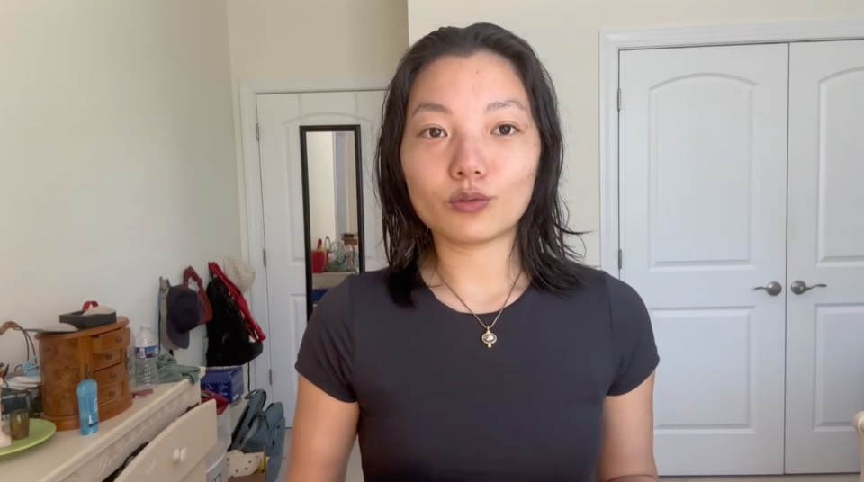
daily tip
mon, tue, wed, thur, fri
a tip from me
a pre-recorded video from me - an exercise that's worked, a mindset shift, a public speaking trick
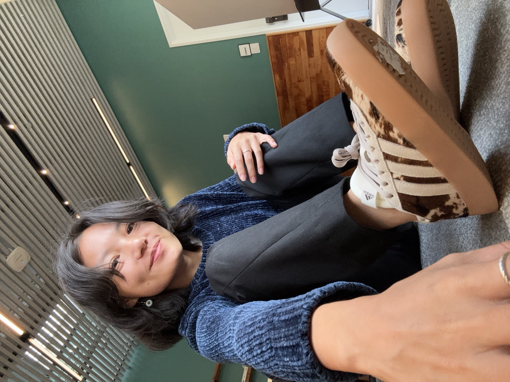
I'm going to teach you how to
become dangerously articulate
hop on the waitlist
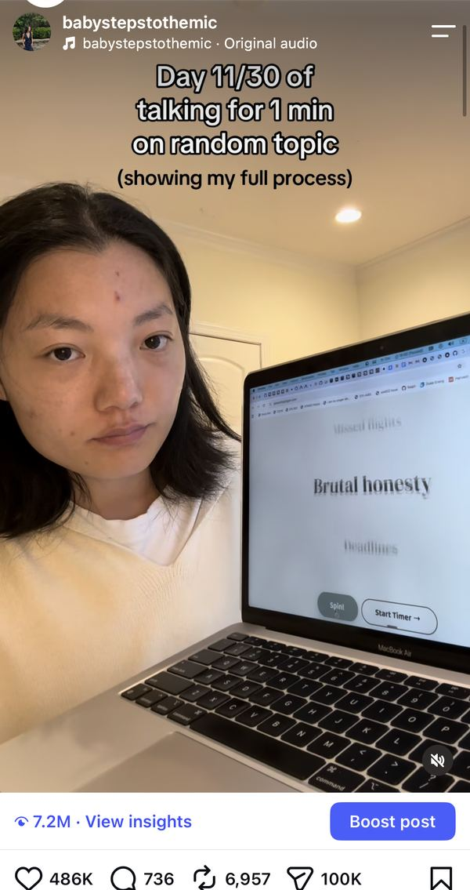
7.2M views
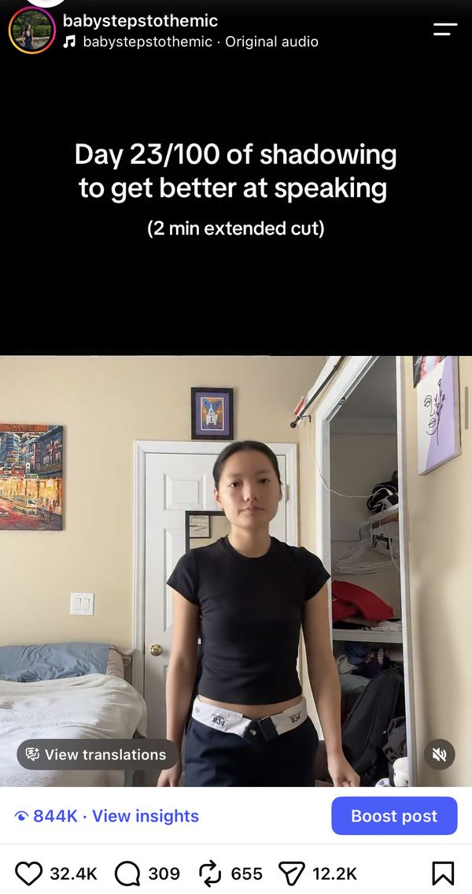
844K views
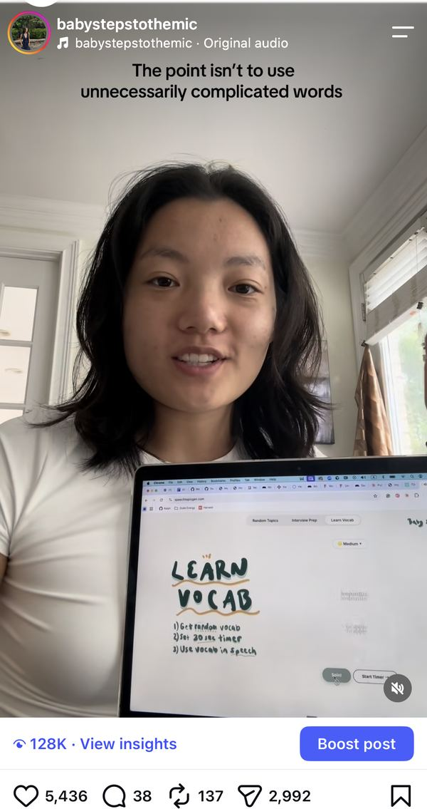
128K views
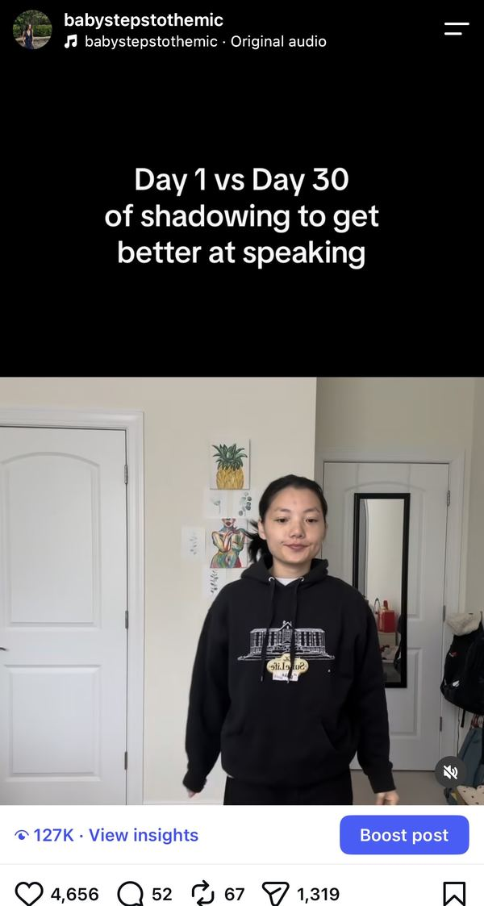
127K views
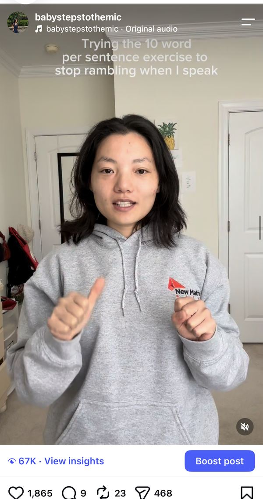
67K views
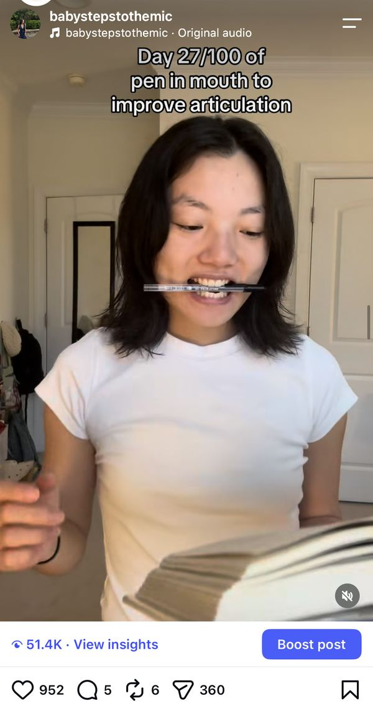
51.4K views
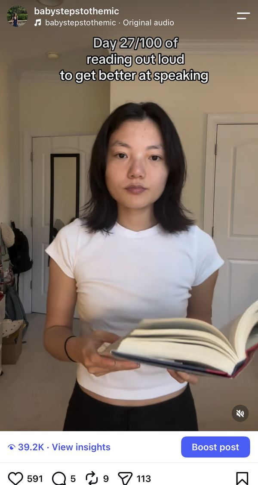
39.2K views
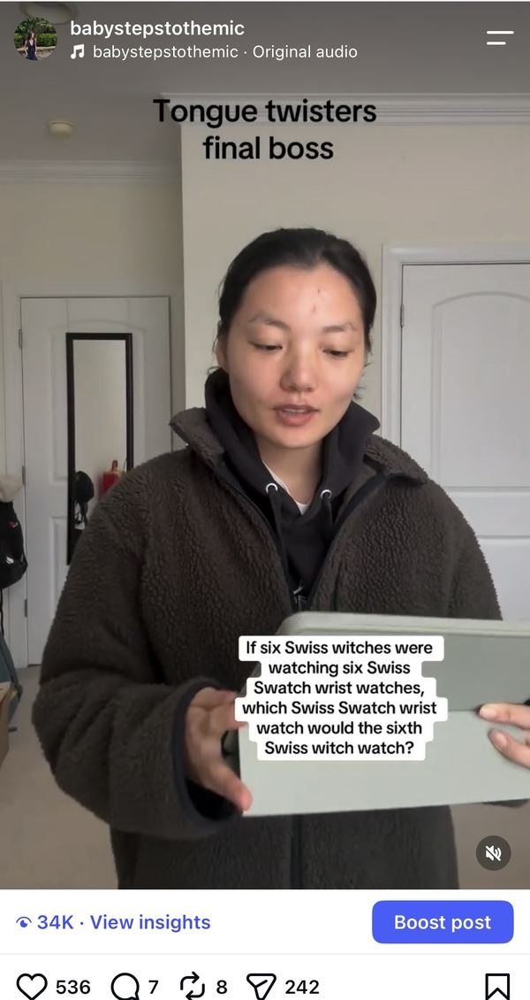
34K views
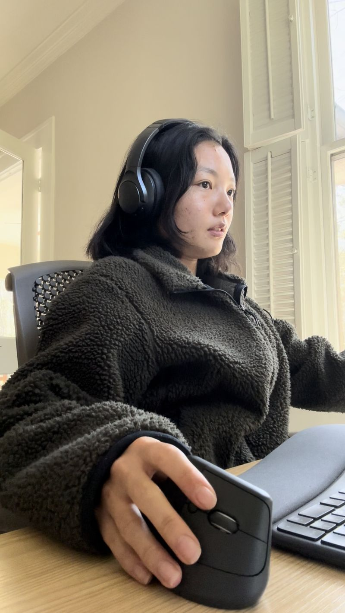
Scared to speak up in meetings 😭
to doing the unthinkable
to doing the unthinkable
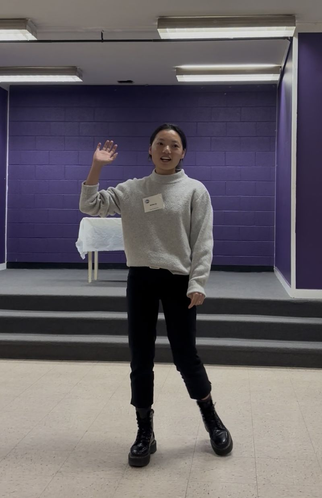
Delivering a 7-min
Toastmaster speech
Going on ABC News
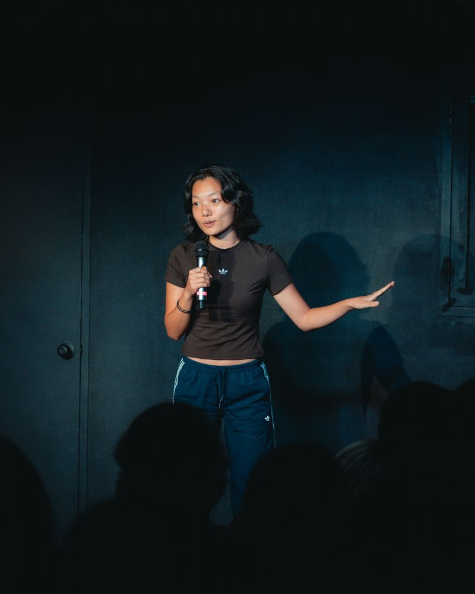
Giving a 5 min stand up set
swipe
I've condensed all the
into a 6-week course

daily tipa pre-recorded video from me - an exercise that's worked, a mindset shift, a public speaking trick
a quick drill that targets that week's skill
speak for 1 min on a topic I'll send in the group chat
post your 1 min speech and we'll give each other feedback
big zoom call to practice public speaking with (basically) no stakes w/ fun games + debates 👀
you'll do the reps of speaking for 1 min on a topic. everyone in the cohort does the same topic, so you have extra accountability to show up
I'll share every exercise that's worked for me this past year, to help you add vocal variety, avoid going blank, and overcome your fear of public speaking
get feedback from each other on what you’ve done well + what to improve
practice public speaking with fun games + debates w/ no stakes
I'll share what I (try to) do every day to help train my speech muscles, so you can keep practicing long after the bootcamp ends
gain awareness of your filler words, the words you tend to mumble, and when you speak too fast or too slow
I promise you'll notice a difference in how you speak! you've (prob) never intentionally trained your speech before, so you'll pick up on lots of things you didn't even realize
hi, I'm mona 👋
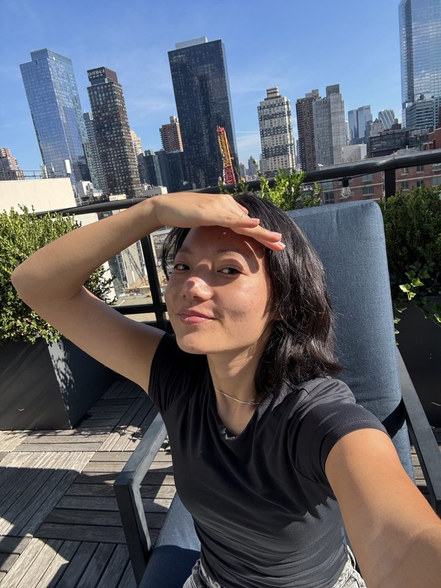
This year, I made a New Year's resolution: stop being scared of public speaking. I was so tired of not showing up the way I wanted to - both at work and in day to day.
I started giving speeches at Toastmasters every week while trying (a billion) articulation drills at home. I started posting my progress online and have somehow built a community of 300k+ people who all want to improve their speech!
10 months later, I’ve truly improved so much as a speaker. My confidence has also skyrocketed.
I’ve condensed everything I’ve learned into this bootcamp - all the best drills and tips. This is your chance to hold yourself accountable and commit to training your speech!
I’m going to teach you (almost) everything I know about speech
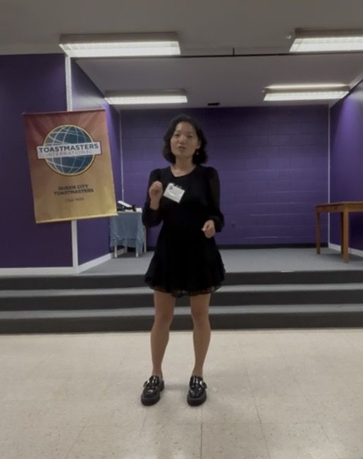
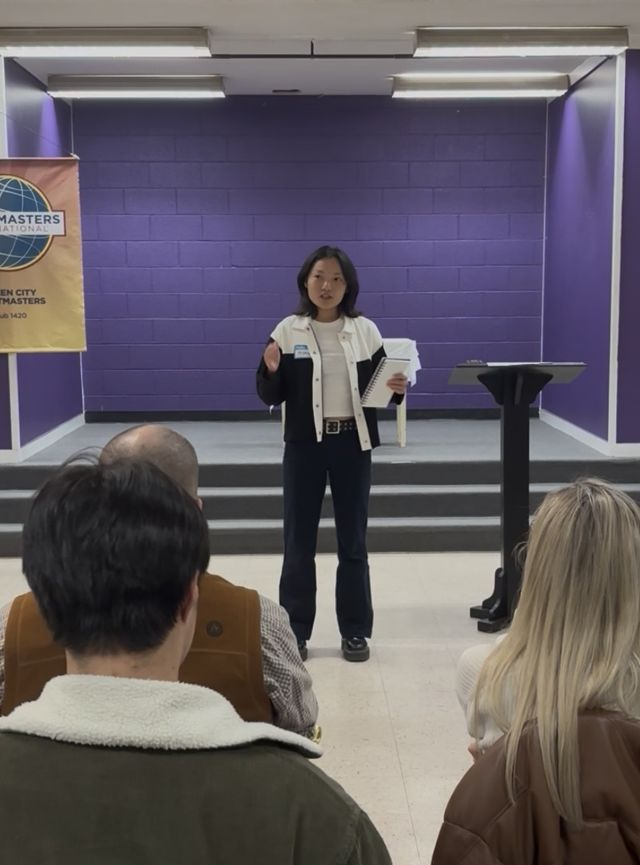
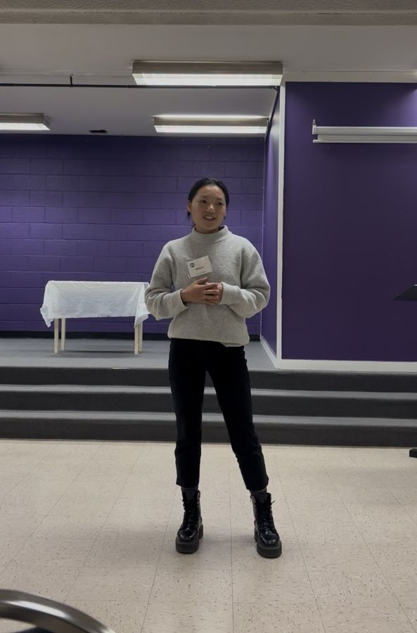
if I can do it,
you can do it too
you've been unconsciously training the way you talk your whole life. 6 weeks won't undo all of it
what this bootcamp will do is kickstart your journey of intentionally training your communication skills. you’ll gain awareness of your speech patterns, and I promise you’ll hear a big difference at the end of it.
doors aren't open yet. hop on the waitlist to be notified when they open 😊
I was really shy when I first started this whole journey! I could barely get my own name out at my first Toastmasters meeting. everyone here is trying to get better. you're in the right place.
we all hop on a big zoom call and practice public speaking together: speaking games, drills, and fun debate rounds. it's your chance to practice getting over your nerves with basically no stakes.
no, you don't, but it's strongly encouraged! every saturday, you can post the video of your 1-minute speech in the chat, and everyone gives each other feedback. one of the best ways to learn is from watching other people.
10 to 20 minutes a day:
pricing comes out when doors open, and the waitlist hears first. hop on so you don't miss it.
The spinner gives you a topic - that's it. The bootcamp helps you learn your speech style, gives you a drill for improving every day, gives you a cohort of people to do it with, and puts you in a live Zoom every other Sunday.
don't quit. just do the next one. every rep still counts.
when I first started, I wasn’t even sure you could actually improve your speech.
I proved to myself (and hopefully to anyone who’s followed along) that speech is very much trainable.
it's time to get in on the action
see you at the mic. – mona